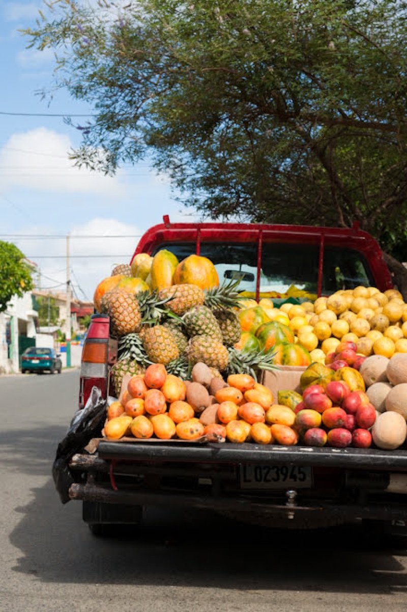
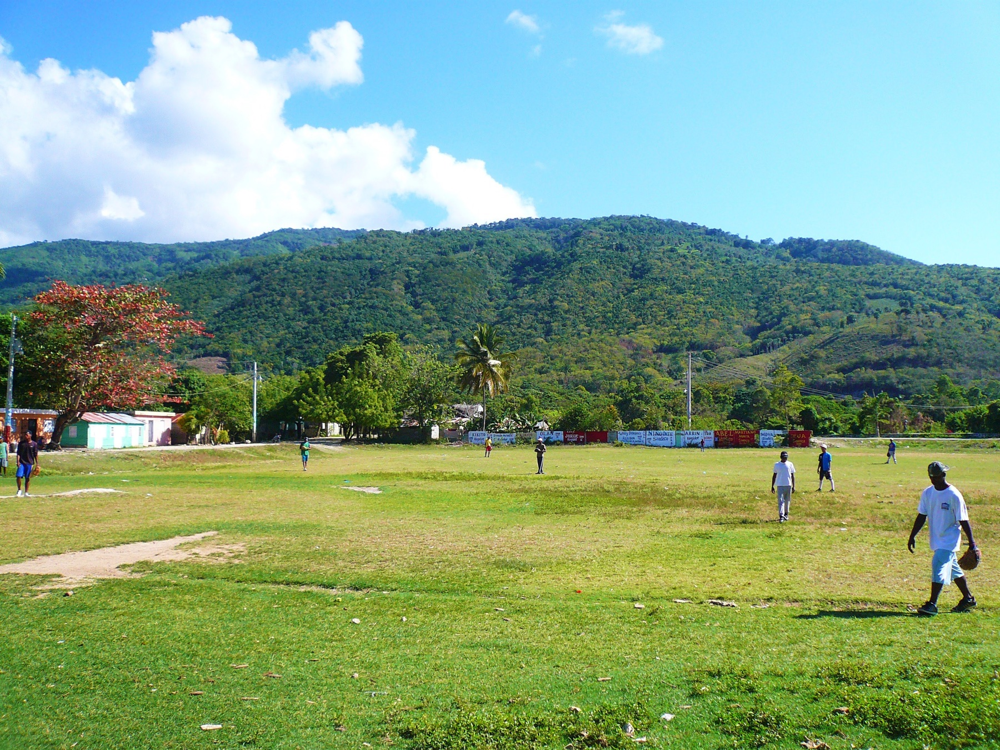

01
日本語だから、腑に落ちる
文法や言葉の使い分けを、日本語でかみ砕いて説明します。 「なんとなく」を残さず、会話に使える理解へつなげます。
ESPAÑOL · CULTURA · CONVERSACIÓN
01 日本語で丁寧に解説
02 現地で生きる表現
03 会話・文法・文化
04 オンラインで受講
SOBRE LAS CLASES
旅行、仕事、音楽や映画。学ぶ理由は人それぞれです。 目標や興味に合わせて、会話・文法・文化を行き来しながら、 自分の言葉で話せる力を育てます。
01
文法や言葉の使い分けを、日本語でかみ砕いて説明します。 「なんとなく」を残さず、会話に使える理解へつなげます。
02
参考書には載りにくい自然な言い回しやカジュアルな表現も。 言葉の背景にある人々の感覚や文化と一緒に学びます。
03
最初から完璧を目指す必要はありません。 3か月後にしてみたいことを一緒に描き、学ぶ順番を整えます。
TU OBJETIVO
旅行・仕事・趣味など、スペイン語でしてみたいことを伺います。
会話・文法・文化を組み合わせた、実際の進め方を体験します。
目標とペースに合わせて、これからの進め方をご提案します。
瀬尾 泰史 せお やすし
TU GUÍA
約18年間、ヨーロッパとアフリカの文化が混在するカリブ海の楽園、ドミニカ共和国に暮らし、日常生活の中でスペイン語と ラテン文化に深く触れてきました。
スペイン語は、単なる文法や単語の暗記ではありません。 人々の暮らしや関係性、ユーモア、ものの見方と強く結びついています。 日本語で文法や使い方をわかりやすく説明することはもちろん、 現地で交わされるカジュアルな表現まで、実感を込めてお伝えします。
「正しく話す」だけでなく、「相手と近づくために話す」。 そんなスペイン語の楽しさを体験していただけたら嬉しいです。
Nos vemos en clase.
CARTAS DESDE LA REPÚBLICA DOMINICANA
海の青、町角の会話、音楽が流れる暮らし。 約18年の生活で出会った風景を、写真と小さな物語で紹介します。 観光案内だけでは見えにくい、日常のドミニカ共和国へ。
写真と物語を読む

¿POR QUÉ EL ESPAÑOL?
スペイン語を学ぶことは、単語や文法を覚えることだけではありません。 人との距離を縮め、いま持っている仕事・経験・趣味に新しい接続先をつくり、 音楽や映画をこれまでとは違う深さで味わうことです。
短い挨拶からでも、相手の文化を理解したいという気持ちは伝わります。
仕事、学び、趣味にスペイン語を加えると、活動できる場が広がります。
言葉のニュアンスに触れると、その背景にある文化まで身近になります。
冗談や感情、文化的な前提、信頼関係は単純な翻訳では置き換えられません。
「言語を一つ学ぶことは、LECTURA · 約7分 スペイン語を学ぶ理由をもっと読む →
世界の見え方を一つ増やすこと。」
HOLA, ¿EMPEZAMOS?
クラスの内容や体験レッスンについて、気になることからお気軽にどうぞ。
メールで相談する neowellness2024@gmail.com